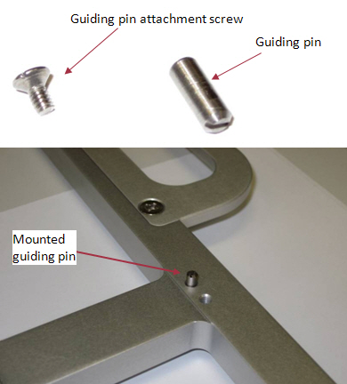
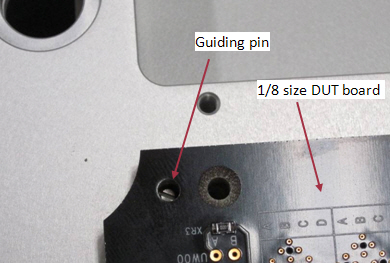

DUT board stiffener guiding pins and mating holes
Guiding pins improve the alignment of the pogo pins to the via pads. This is especially important for very high-density configurations.
The guiding pin was introduced with revision G of the stiffener design (for the drawings see Stiffener general purpose).
As the guiding pin is removable, the stiffener design is backwards compatible.
Guiding pin
The figure below shows the mounted guiding pin. To attach or remove the guiding pin you insert or remove the screw at the back of the stiffener.

Mating hole
The figure below shows a DUT board with the mating hole required for the stiffener guiding pin.

Functional changes
- Introduced in SmarTest 7.2.1